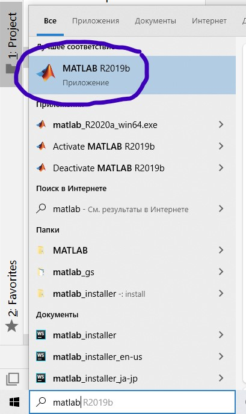
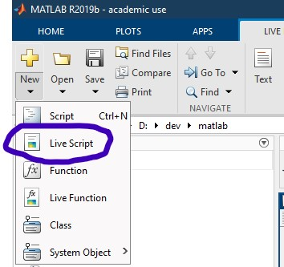
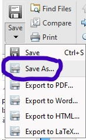

Построение графиков в MATLAB
Инициализация
Открываем MATLAB и создаём новый скрипт. В новых версиях MATLAB предпочтительнее создать Live Script — файл с расширением .mlx. Сохраняем файл в одну папку с экспериментальными данными.


